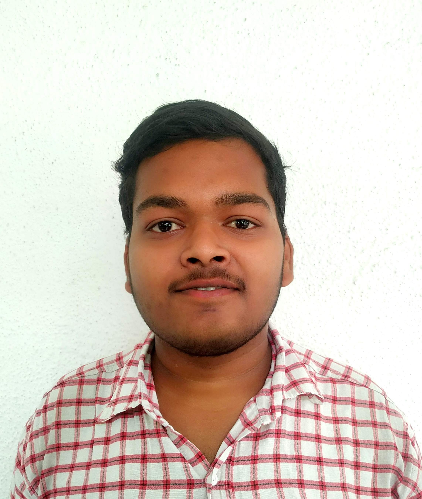

Aditya ghabade

Objective Statement
I am Self-motivated Hardworking. Seeking for Opportunity to work in challenging environment to skills and utilize my knowledge in the growth of organization. Goal Oriented about Given Task.
Education
- M.Sc (Computer Science) - Prof. Ramkrishna More College,Akurdi(2021-2023)
- B.Sc (Computer Science) - Tikaram Jagannath College,Khadki(2018-2021)
- H.Sc (Science) - Indrayani Mahavidyalaya,Talegaon Dabhade(2016-2018)
Skills
Work Experience
- Volunteer, Quick Heal Foundation,
I was Volunteered to create the awareness Of the Cyber Security among the Students from 5th-12th. It was a great experience for me.
Academice Project:
Sales Management System (Java):
- This Project is based on the Java Programming Language.
- The Data Base Management System is MySQL Workbench.
- In the backend I used XAMPP to store the data in database.
- In the frontend I used NetBeans IDE to develop the GUI.
Hobbies & Interests:
- I like Reading About Technology.
- I like Watching Movies & TV Shows.
Awards & Certifications:
- Certified from Indian Scouts & Guides with 'A' grade.
- Certified from Tikaram Jagannath College for participation in 'C' Prgramming Competition.
Others: